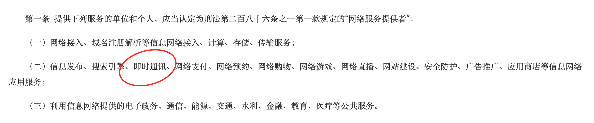

开发运营社交软件也要遵守法律
10月25号最高法出台了一部法律解释，从11月1号已进入实施阶段。所有从事IM即时通讯运营和开发的都应该了解一下。在这里简单跟大家分享一下。
解释首先定义了什么是“网络服务提供者”： 
可以看到提供“即时通讯”的个人和单位都属于本次解释的管辖对象。
然后在第三、四、五、六明确了拒不履行信息网络安全管理义务，做了什么什么事情，这里就不截图了，大家看原文吧。可以看到任由违法事件发生造成严重后果的，运营方将会被追究刑事责任。
后面的第十一条、第十二条规定为违法行为提供技术支持的也同样被追究刑事责任，不能老板让干啥就干啥，需要为自己开发出来的产品负责的。
作为即时通讯运营方，是需要对IM内所有发生的事件负责任的，因此需要加强监管，防止有违法犯罪行为发生，否则轻则限令整改关闭应用，重则锒铛入狱追悔莫及。那么运营方怎么监管呢：
- 要对客户实名认证，至少要确认用户手机号码，因为现在手机号码都是实名的，如果确认了手机号码那就基本上是实名的了。
- 要设置敏感词，防止敏感信息传播，另外一个重要的作用筛选出需要密切关注的人员。野火IM的敏感词命中后，消息会存储在敏感消息表中，可以容易地看到谁发给谁的或谁发在那个群里的。
- 要能在后台审查消息内容，可以不定期，随机抽查消息内容，防止虚假违法消息传播。
- 要能够处理消极影响，可以撤回虚假或违法消息，另外还要有能力对相关人员进行封禁处理。
- 不要开发端到端加密功能。使用端到端加密功能，您将失去监管能力。一般需要端到端加密功能的也都是见不得人的事。
野火IM提供有收费的管理后台，可以管理您的即时通讯软件。当然管理接口都是公开的，您也可以自己来开发。甚至定时去数据库里查一查消息和敏感消息表也是个方法。无论如何您一定要行使您的监管职责，不要放任自流。
那么对于技术人员呢，再也不能以技术无罪来当借口了。如果雇主从事非法生意，那就果断离开吧，到哪里不能讨生活呢，何必害人又害己呢。如果给别人提供技术服务，比如给别人开发社交软件或者运维部署，一定要告诉甲方“网络安全管理”的义务，在合同里注明甲方使用目的和免责条款。避免引火烧身。
对于我们来说，我们也只会跟正常客户做生意，违法和插边球嫌疑的客户我们绝对不会碰的。这样才能确保我们的项目能够长久持续下去，才能够持续地为大家服务。
法律详情可以点击查看原文进行阅读。